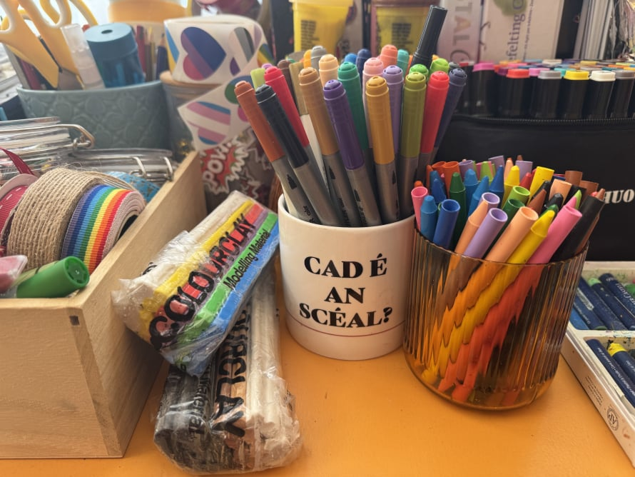
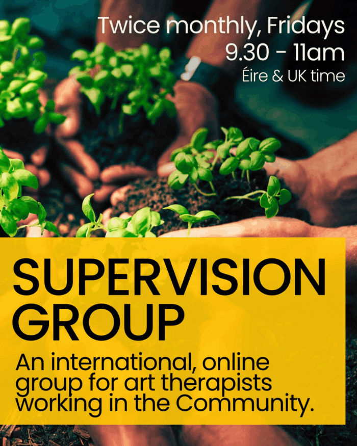

My name is Aisling (pronounced Ash-ling). I'm an Irish artist and HCPC-registered art psychotherapist based in the East Midlands.
My work is grounded in psychodynamic theories, group analysis, and the therapeutic community approach. I primarily work with people navigating the effects of institutional abuse, statutory failures, and transgenerational trauma, and have extensive experience supporting survivors of abuse, trauma, domestic and political violence, as well as people experiencing neurodivergence, climate anxiety, depression, disordered eating, and diasporic displacement.
I have specialised experience in community incident response and disaster recovery. During the COVID-19 pandemic, I worked as an art psychotherapist within the television and film industry.
As a dual-experienced practitioner, I bring both formal training and lived experience of the mental health system, neurodivergence, and therapeutic communities to my practice.
Qualifications:
MA Art Psychotherapy, Goldsmiths University (2015)
International Diploma in Group Work, Group Analysis India, London, Aug 2021 – July 2022
Foundation Certificate in Group Analysis, Institute of Group Analysis, London, Oct 19 – July 20
Degree in Modelmaking and Design for Film and Theatre, Ireland's National Film School (2007)
Click here to view my full CV.
Working with me:
From my art therapy studio in Newark, I offer art psychotherapy for adults and young people, both locally and online. Sessions can be long-term or time-limited, as part of a group or one-to-one. Our first 30-minute conversation is free of charge, and I'm happy to answer any queries and help you think about whether I might be the right therapist for you.
I also offer supervision for art therapists, socially engaged practitioners, and community organisations.



Art psychotherapy (also known as art therapy) offers a different way to explore what you're experiencing. Through creative expression—drawing, painting, collage, sculpting—you can communicate and process thoughts and feelings that might be hard to put into words.
You don't need to be artistic. The focus isn't on technical skill or making something that looks nice - it's about the creative process itself. What emerges as you work, what you discover, and how making art can help you work through difficult emotions and deepen self-awareness. You don't even have to make art in every session.
In art psychotherapy sessions, a trained art psychotherapist guides and supports you through this process, creating a safe space for exploration and growth. Art psychotherapists are registered with the Health Care Professionals Council and are trained in using art and creativity combined with psychotherapy models to help people express complex feelings safely.
Because art therapy doesn't depend on spoken language, it's suitable for all ages and can be particularly useful for people who have experienced trauma, injustice, displacement, abuse, eating problems, and climate anxiety. Any artwork made in sessions is confidential.

Groups form microcosms of society. Dynamics arising in group therapy can echo our personal, social, cultural, and political contexts, offering space to explore who we are and the world around us.
Thinking together with others in a group can help make sense of how the past influences the present. Groups can be a lifeline for people who are isolated, especially those suffering because of social or cultural circumstances.
They encourage imagination, connection, and healthy relationships, improve communication skills, reduce feelings of isolation, and can help people find their authentic voice.
Current group offerings:

12.30 - 2pm (Éire & UK time), Mondays
With icap (Irish Immigrant Counselling and Psychotherapy), I convene a weekly, online art therapy group for Irish adults living across Britain. Flyer.

9.15 - 10.30am (Éire & UK time), Fridays
This group started in September 2025 for newly qualified and early career art therapists. The group aims to support the growth of your Community practice.

8 - 9pm (Éire & UK time), Wednesdays
Beginning August 2024, this is a peer group for Community orientated therapists, creatives and group workers. *Feb 2026 Update, this group has been paused for the moment and will resume at a later date.

1.20 - 3pm (Éire & Britain time)
Friday, 30th January 2026
An online art therapy group to mark the Irish tradition of Brigid's Day and the beginning of Spring here in Éire and the Britain.

1.20 - 3pm (Éire & Britain time)
Friday, 6th March 2026
An online gathering for psychotherapists to reflect on past experiences of training, supervision and work.

Democracy involves authentic and collective, large group dialogue. As art therapists, we know that dialogue is not just about words. It includes all forms of expression in our Community including silences, different kinds of behaviour and creativity.
As social action, art making offers an accessible way for individuals and Communities to find their authentic voices and magnify them. Making art in a large art therapy group can enable authentic Community dialogue and true democracy. This method of dialogue elevates awareness, deepens insight and creates meaningful social change.
In Community, art making in a large group can help to bridge polarisation in a way safe way. It can help us to understand the origins of problems and how the past impacts the present. It's affects can be far reaching, long lasting and sustainable.

Supervision is a confidential space with an experienced supervisor to talk, reflect and think together about (usually) therapy work. The aim is to ensure client welfare and support your ongoing development as a therapist. Its centres your work and the people you are working with. Context matters, so we are also often thinking about spaces, group dynamics and the world we are finding ourselves in. Ethical decision making and practice is at heart.
Through the sharing of experiences, we are deepening our understanding and learning in meaningful conversation. I encourage creative responses and we can make art within the supervision process - if you want to. As a lived experienced, art psychotherapist, I welcome conversations about how the work and trainings affects you professionally and personally. Supervision isn't a tick box exercise. It is a valuable and nourishing space that supports the work of psychotherapists in a sustainable way.
For Community organisations, supervision can help to ensure that your work is trauma informed. It provides reflective space, offers an additional safeguarding measure, supports learning and helps prevent burnout.
I offer an initial 30-minute conversation free of charge.
My fees operate on a sliding scale to make therapy accessible. Individual sessions typically range from £60–£125, and weekly group therapy is £30 per person as standard.
If you're a higher earner and can afford to pay more, please let me know - contributions at the higher end help sustain reduced-rate spaces for others. For people on low or no incomes, I offer reduced-rate spaces. These are prioritised for people at greater risk of discrimination or exclusion from existing community services. If this applies to you, please get in touch.

To begin, contact me by email at communityarttherapist@gmail.com and we can arrange a time to talk.
Please let me know your name and reason for contacting me, and I'll respond as quickly as possible. My working hours are generally 9.30am–3pm, Monday to Friday.

AI Website Generator